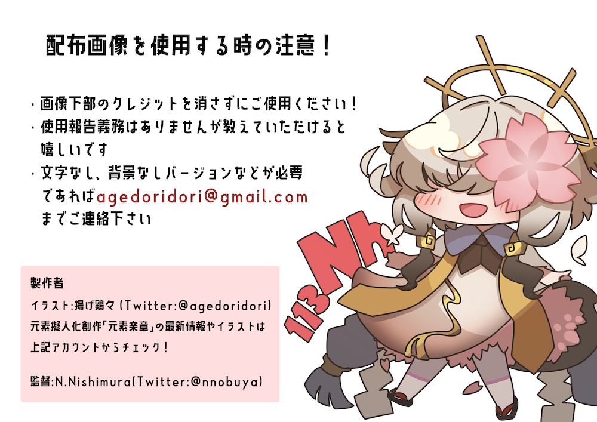
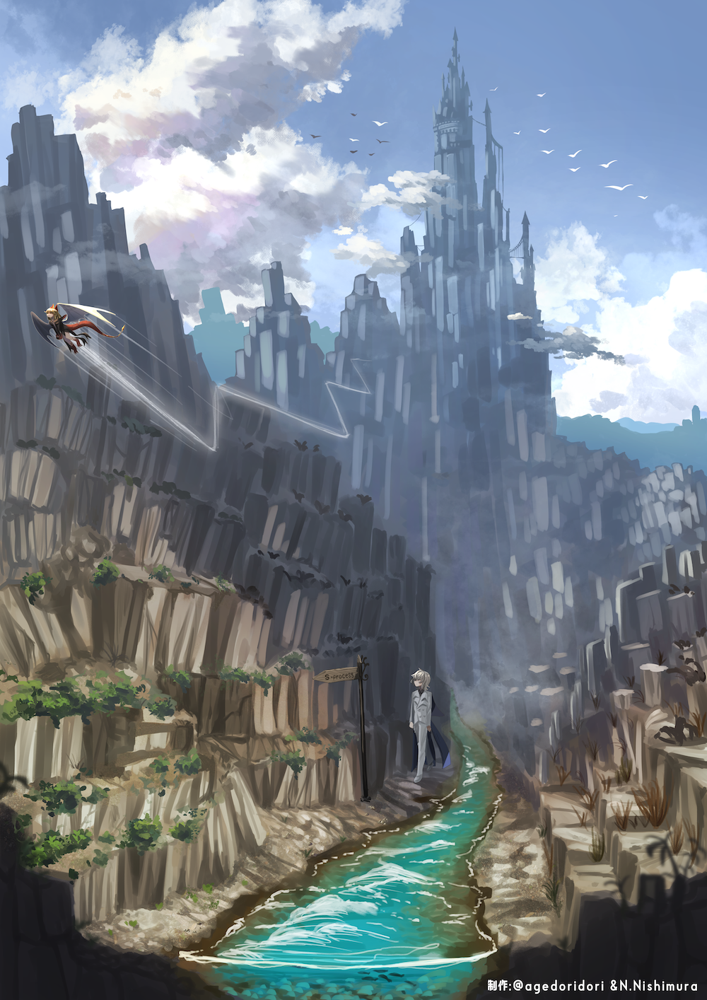
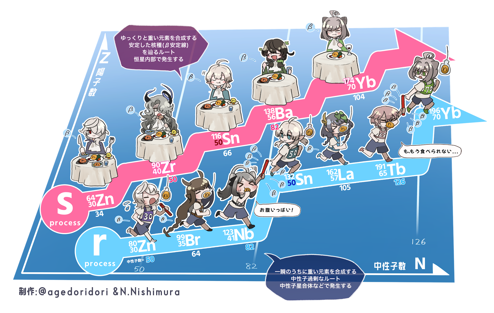
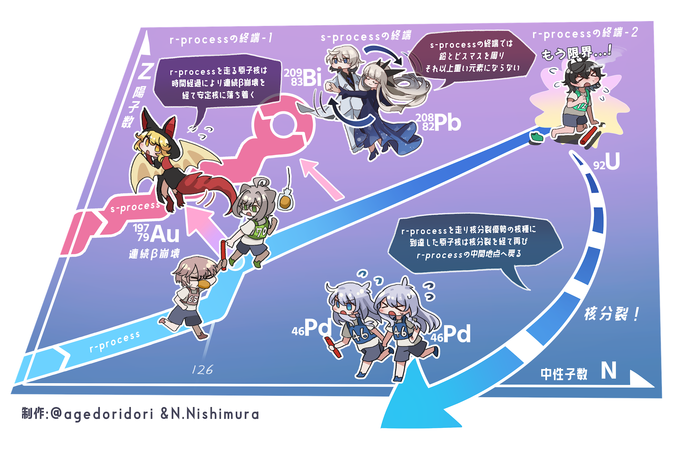
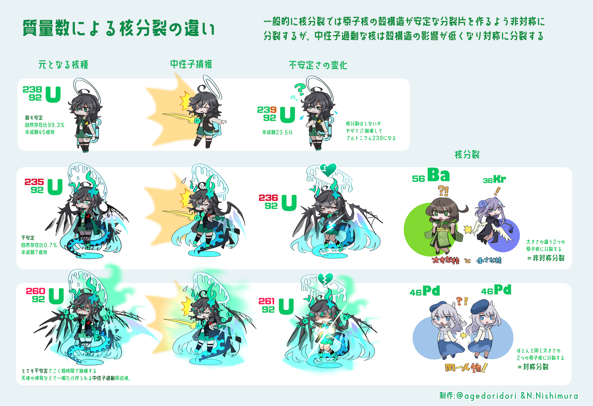

って何？
皆さんは、中学校や高校の理科の授業で元素の周期表を習ったことがあると思います。様々な元素が化学的な性質を元に分類されて整然と整理された表です。物質の根源的な要素である元素の実物をみると様々な「顔」をしています。これら多様な元素たちを擬人化するプロジェクトが元素楽章（© 揚げ鶏々）で、元素を擬人化したイラスト、元素が住む世界を表現した絵の制作が行われています。「元素楽章×元素合成」プロジェクトは、元素楽章の世界と宇宙の元素合成の研究者（西村）との共同制作コラボレーションです。元素楽章の元素擬人化キャラクターたちが宇宙の元素合成を舞台に躍動する（？）様子をイラスト化しました。宇宙の天体現象や元素の変換（原子核変換）に関する最新の研究成果に基づいて、元素キャラクターたちが宇宙の元素合成を演じています。元素楽章のストーリーの１コマとして可愛らしく愉快に表現された宇宙の元素合成の魅力をお楽しみください。元素楽章の世界は、元素の発見の物語や化学的性質を織り込まれており、元素たちのイラストは本格的な科学解説にも利用できます。
興味ある方は、元素楽章のサイトや宇核連研究会（2022年7月）での発表スライドもご参照ください。
現在のところ、次のテーマに関するイラストが公開されています。
- 中性子捕獲による元素合成（sプロセスとrプロセス）（2022年8月公開、5点）
このサイトで公開、あるいは製作者たちによって配布されるイラストは、研究発表、教育活動、アウトリーチなどの科学解説の目的であれば自由にお使いください。適切に引用されていれば、発表資料等を公開して構いません。以上の使用について、事前・事後の連絡も必要はありません。（義務ではありませんが、「こんなところで、こんな風に使ったよ」とかフィードバックをもらえると嬉しいです。）ただし、オリジナル画像の再配布や著作表示を改変しての使用や公開はしないでください。また、無許可でイラストを使用した製品を作成し販売することも禁止します。利用にあたって気になるケースである場合は、問い合わせ先にご相談ください。その他、高解像度の画像や背景や文字なしバージョンを希望する場合なども、直接ご相談ください。（全ての要望に対応できるわけではありません。）

作品たち
中性子捕獲による元素合成（sプロセスとrプロセス）
sプロセスとrプロセスと呼ばれる元素合成に関するイラストです。





今後？
好評だったら第２弾もあるかも！？ 応援よろしく！
問い合わせ
何かあれば、プロジェクトメンバーまでどうぞ。（ _at_ の部分を @ に変えてください。）どちらか片方宛でもいいですし、両方に連絡していただいても構いません。
- （イラスト作成）揚げ鶏々 ( e-mail: agedoridori _at_ gmail.com )
- （サイエンス担当）西村 信哉 ( e-mail: nobuya _at_ cc.kogakuin.ac.jp)